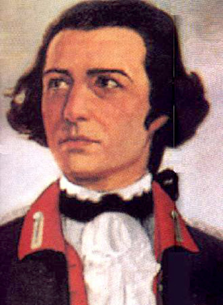
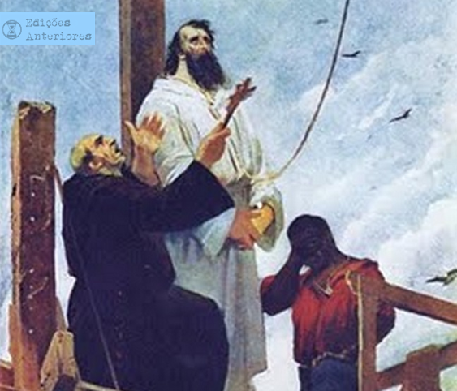
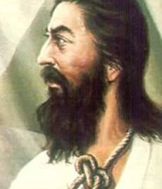

Tiradentes
 Nome: Joaquim José da Silva Xavier.
Conhecido Mártir da Incofedência Mineira
Nascimento: 12 de novembro de 1746-MG
Morte: 21 de Abril de 1792 (45 anos)-RJ
Ocupação: dentista, militar, ativista politico.
Nome: Joaquim José da Silva Xavier.
Conhecido Mártir da Incofedência Mineira
Nascimento: 12 de novembro de 1746-MG
Morte: 21 de Abril de 1792 (45 anos)-RJ
Ocupação: dentista, militar, ativista politico.

Quem foi Tiradentes?
Tiradentes, foi o único dos envolvidos na Inconfidência Mineira a ser condenado à morte. "Tiradentes" seu nome Joaquim José
da Silva Xavier, consagrou-se pela sua participação ativa na Incofidência Mineira. Infelizmente, ele foi o único dos
envolvidos que recebeu a pena de morte, uma vez que os outros envolvidos foram perdoados pela Coroa Portuguesa.
De uma família humilde, Joaquim José nasceu na Capitania de Minas Gerais, em 12 de novembro de 1746. Joaquim José precisou
exercer inúmeros trabalhos, algumas delas dentista amador, que deu lhe o apelido "tiradentes". Também tentou a sorte como
tropeiro (condutor de tropas de animais, transportadoras de mercadorias) Ele também havia trabalhado na
mineração, porém, foi no posto de alferes nos quadros da cavalaria imperial que Tiradentes alcançou certa estabilidade.
Apesar de pouca instrução, ele era um republicano convicto e adepto dos ideais do Iluminismo.
Tiradentes, apesar de não ser um intelectual, interessava-se por escritos políticos, como as leis constitucionais dos Estados
Unidos, país que havia conquistado a sua independência em 1776, quando o alferes tinha 30 anos de idade. Os interesses
políticos de Joaquim José da Silva Xavier aos poucos foram se divergindo dos interesses de outros habitantes de Vila Rica,
que era o centro da atividade mineradora do Brasil na época.
O motivo principal que animava Tiradentes e os outros envolvidos na Inconfidência a se levantarem contra o governo de
Visconde de Barbacena e o Império Português era a constante retirada das riquezas da região por meio de impostos excessivos.
Do ouro produzido na Capitania de Minas de Gerais, a Coroa Portuguesa cobrava o chamado quinto, isto é, o equivalente a
cerca de 20% do total extraído. Ocorreu que, a partir da década de 1760, a extração de ouro regrediu consideravelmente, mas
não o valor do imposto. A taxa do quinto continuou a ser exigida dos mineradores locais, e o governador Barbacena, para
fazer valer a lei, chegava até a impor agressões físicas.
O problema agravou-se mais ainda quando, para reverter a margem defasada dos quintos recolhidos, a Coroa Portuguesa autorizou
a implementação da chamada derrama. A derrama obrigava os mineradores a cobrirem com suas posses, isto é, tudo aquilo que
lhes pertencia como objeto de valor, o que faltava na quantia do quinto. Isso significava que o rombo provocado no pagamento
do imposto à Coroa, resultante do declínio da mineração, acabou tendo que ser pago com outras formas de obtenção de
dinheiro, como pedágios cobrados sobre o uso das estradas, escravos etc. Todos eram forçados a pagar a derrama.

A Inconfidência
A conspiração dos inconfidentes começou a ser preparada em 1788 para que as ações passassem a se realizar no ano seguinte.
Tiradentes, por sua personalidade agitada, ficou conhecido como o mais radical dos inconfidentes.
Tiradentes chegou a tramar a morte de Visconde de Barbacena, e isso só não foi concretizado porque Barbacena, por meio da
confissão de um dos inconfidentes, José Silvério dos Reis, desmantelou a trama e prendeu todos os envolvidos.

Prisão, morte e heroificação
Presos, muitos dos inconfidentes, temendo severas punições, não confessaram seus crimes. O único a fazê-lo foi Tiradentes,
que, por isso mesmo, recebeu a pena mais dura, em um processo transcorrido na cidade do Rio de Janeiro, que só teve fim em
21 de abril de 1792.
Tiradentes foi “enforcado, decapitado e esquartejado. Para que os súditos da Coroa nunca se esquecessem da lição, a cabeça de
Tiradentes foi encravada num estaca e exposta em praça pública em Vila Rica, e seus membros, espalhados pela estrada que
levava ao Rio de Janeiro.”
Vale notar que, tanto no período imperial quanto no período republicano, a imagem de Tiradentes passou a ser tomada como um
ícone da liberdade e da independência do Brasil, como um herói da nação. Essa imagem foi constantemente reforçada por
pinturas (como a imagem no início deste texto, de autoria de Pedro Américo) e monumentos (como a instalação do primeiro
monumento dedicado a ele na cidade de Ouro Preto, em 1867). No ano de 1965, já na primeira fase do Regime Militar no
Brasil, o marechal Castelo Branco, então presidente da República, contribuiu para o reforço dessa imagem de Tiradentes,
sancionando a Lei Nº 4. 897, de 9 de dezembro, que instituía o dia 21 de abril como feriado nacional e Tiradentes como,
oficialmente, Patrono da Nação Brasileira.
